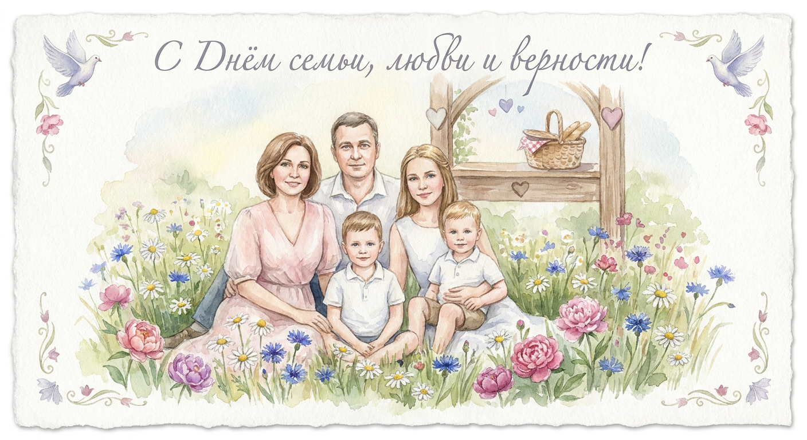
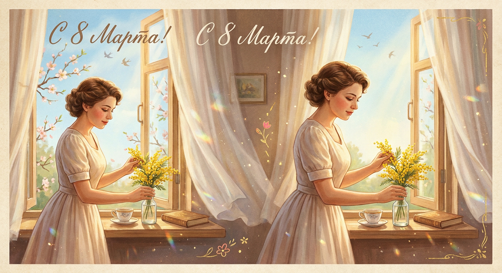
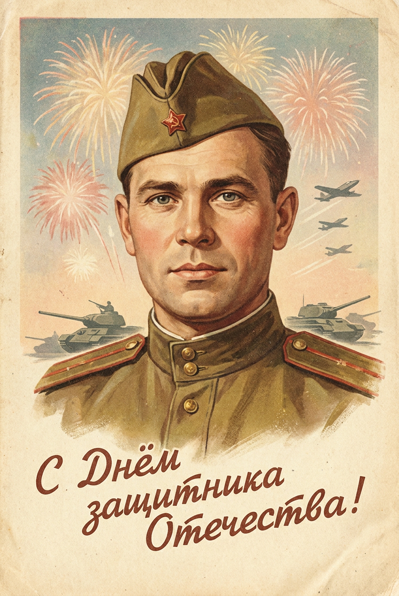
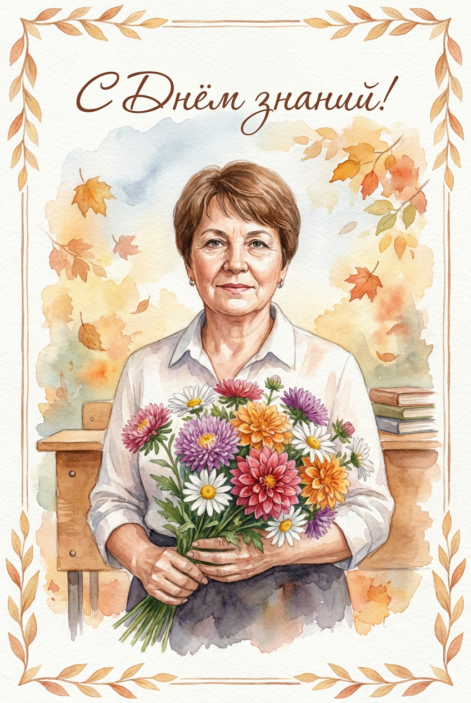
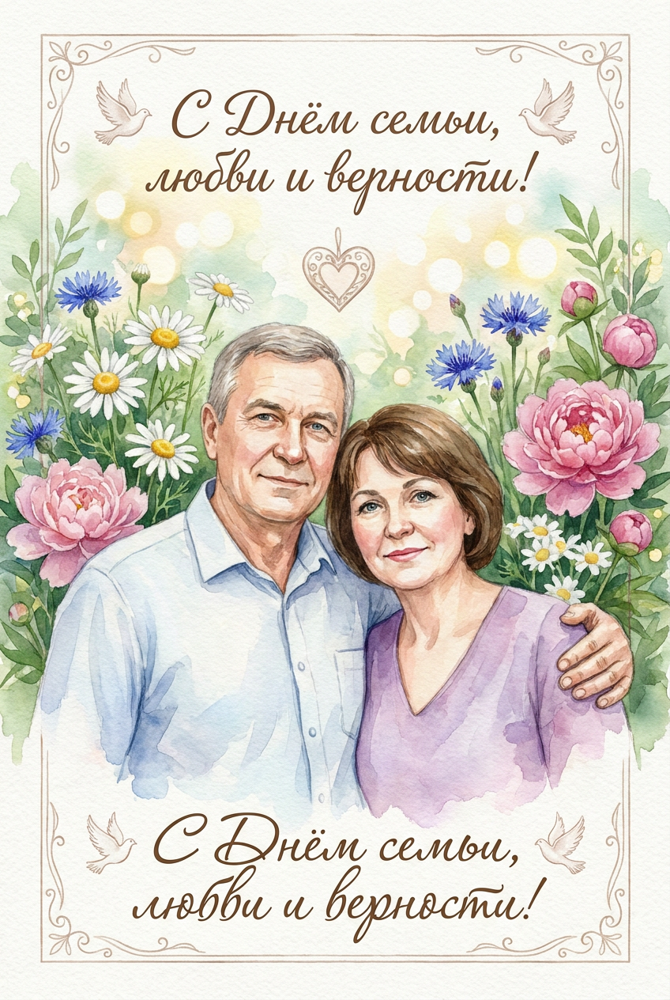
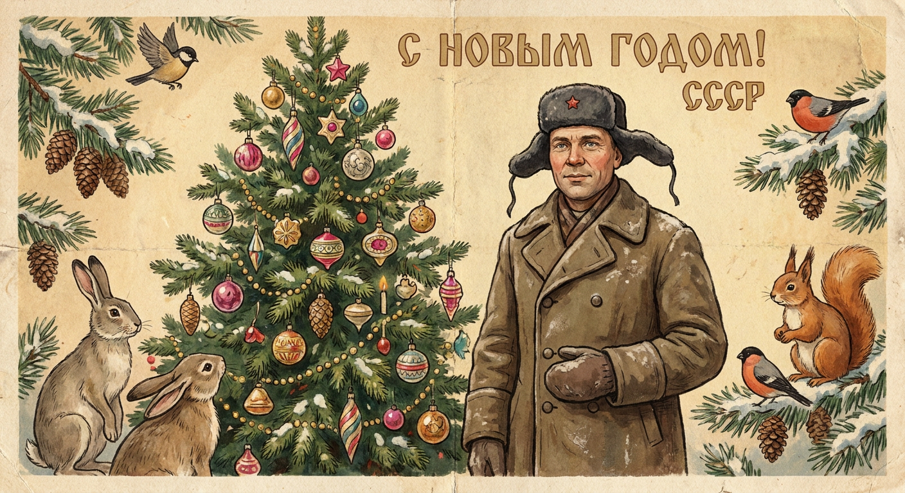
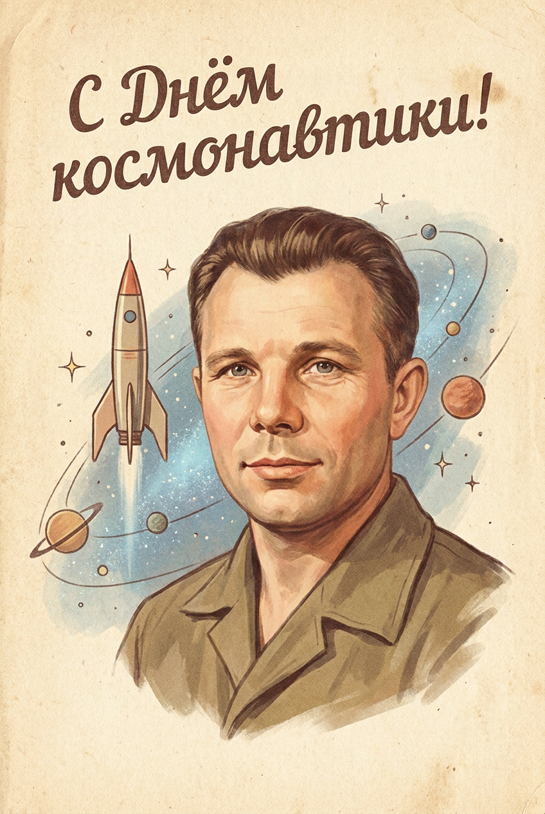
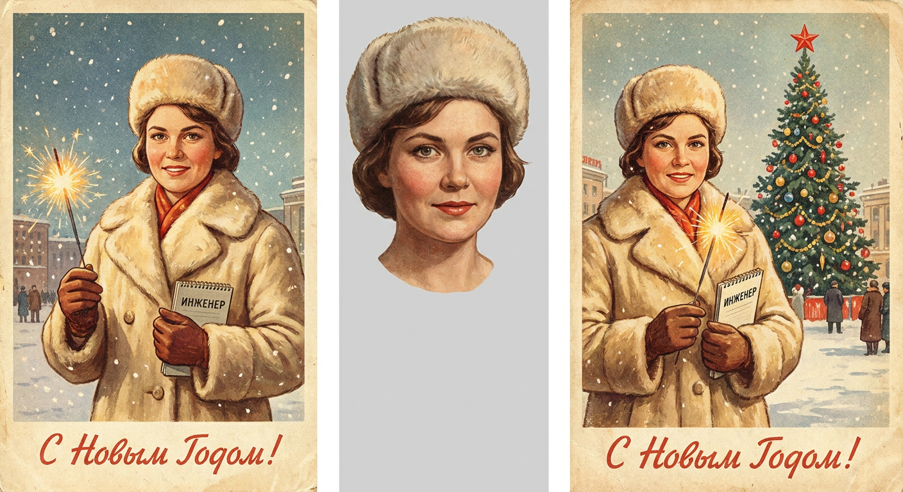
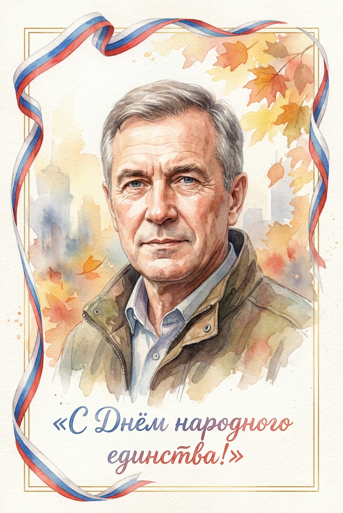
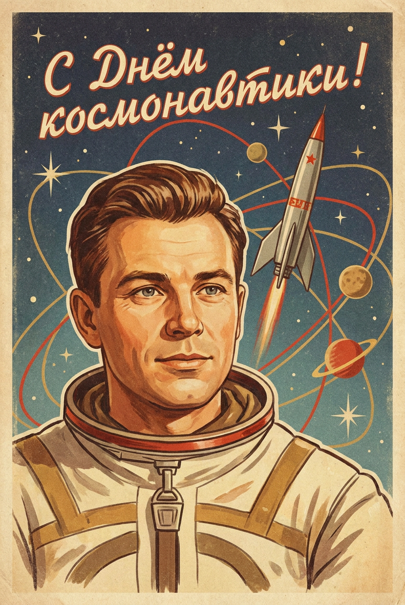

ИИ-открытки: 10 промптов для нейросети

Поздравительная открытка из фотографии часто превращается в странный коллаж: лицо меняется, надпись искажается, а важные детали теряются. Генерация по точному промпту помогает заранее задать стиль, композицию, настроение и текст.
В подборке — 10 сценариев для семейных праздников, 23 Февраля, Дня знаний, Нового года, Дня космонавтики и других дат. Здесь есть акварельные портреты, советская печатная графика и открытки с праздничной символикой.
Как сгенерировать такое фото: пошагово
Нужен снимок анфас при ровном свете, лицо в кадре целиком, без тёмных очков и головных уборов. Разрешение от 1000 пикселей по короткой стороне. Чем чётче исходник, тем точнее модель повторит черты.
Выберите сценарий ниже и нажмите «Копировать» — текст уйдёт в буфер целиком, вместе с командой сохранения внешности. Эта команда стоит первой строкой и отвечает за то, чтобы на выходе было ваше лицо, а не случайное.
Кнопка «Сгенерировать» рядом с каждым промптом открывает модель в новой вкладке. Nano Banana Pro работает с референсом лица — в отличие от моделей, которые генерируют портрет с нуля и узнаваемость теряют.
Промпт — в поле ввода, портрет — через загрузку референса. Порядок значения не имеет, но без референса команда сохранения внешности работать не будет: модели нечего сохранять.
Для сторис и ленты берите 9:16, для превью и обложек — 4:3. Первый результат редко идеален: если поза или свет ушли не туда, поправьте соответствующую часть промпта и запустите заново. Обычно хватает двух-трёх итераций.
10 промптов для генерации
1. Семейная акварельная открытка
Строго сохранить внешность по загруженному референсу: черты лица, пропорции, мимику и текстуру кожи без изменений. Оформи предоставленную семейную фотографию как поздравительную открытку ко Дню семьи, любви и верности — 8 июля. Важно сохранить узнаваемость каждого человека: не менять черты лица, возраст, мимику, пропорции и геометрию, исключить карикатурность и искажения. Используй акварельную графику с полупрозрачными слоями, мягкими переходами, нежной палитрой и заметной фактурой бумаги. Добавь лёгкое ощущение отпечатанной открытки, аккуратные мягкие края без жёстких контуров. Размести семью на переднем плане — по грудь или в полный рост, в зависимости от исходного кадра. На фоне — тёплая романтическая сцена с зеленью, ромашками, васильками и пионами, мягким рассеянным светом. Допустимы голуби, растительный орнамент в форме сердца и тонкая декоративная рамка. Впиши сверху или снизу текст: «С Днём семьи, любви и верности!»
2. Весеннее окно в ретростиле

Строго сохранить внешность по загруженному референсу: черты лица, пропорции, мимику и текстуру кожи без изменений. Преврати исходную фотографию в поздравительную иллюстрацию в духе советских открыток 1950–1970-х годов. Покажи девушку у открытого окна: в комнату падает тёплый весенний свет, сцена выглядит постановочной, кадр — средний или в полный рост. Сохрани лицо, возраст, выражение, пропорции и индивидуальные черты без изменений, но добавь аккуратную художественную стилизацию. Одень героиню в лёгкое ретро-платье с женственным силуэтом в духе 1950–1960-х, сделай аккуратную причёску и домашний милый образ. В руках может быть небольшой букет тюльпанов или мимозы; альтернативный вариант — девушка ставит цветы в стеклянную вазу на подоконник. Добавь лёгкие занавески, весеннюю зелень и мягкую живописную технику с тёплой атмосферой домашнего уюта. Оформи результат как старую печатную открытку.
3. Винтажная открытка к 23 Февраля

Строго сохранить внешность по загруженному референсу: черты лица, пропорции, мимику и текстуру кожи без изменений. Создай вертикальную поздравительную открытку ко Дню защитника Отечества — 23 февраля — на основе фотографии человека. Портрет размести на переднем плане, по грудь или по пояс, с максимально точной передачей лица, возраста, эмоций, пропорций и геометрии без карикатурных искажений. Используй эстетику советской праздничной графики 1950–1970-х: мягкую живописную манеру, тёплую приглушённую палитру, лёгкую зернистость, фактуру состаренной бумаги и эффект старой типографской печати. Цвета должны выглядеть немного выцветшими, как у настоящей открытки из семейного альбома. На заднем плане размести праздничный салют или фейерверк. Силуэты военной техники допустимы, но сделай их очень мягкими и второстепенными, чтобы они не конкурировали с лицом. Добавь декоративную надпись винтажным шрифтом: «С Днём защитника Отечества!»
4. Акварель ко Дню знаний

Строго сохранить внешность по загруженному референсу: черты лица, пропорции, мимику и текстуру кожи без изменений. Сделай вертикальную поздравительную открытку ко Дню знаний, 1 сентября, используя фотографию человека как основу. Человек находится на первом плане — по грудь или в полный рост, в зависимости от исходного кадра. Лицо, возраст, выражение, естественные линии и пропорции передай максимально точно, без карикатуры и деформаций. Примени акварельную обработку: мягкие мазки, полупрозрачные слои краски, видимую бумажную фактуру и нежную палитру с тёплым осенним настроением. Добавь лёгкие растекания и блики, но без грязных пятен. Фон — размытая школьная атмосфера с золотистыми листьями, мягким небом и ненавязчивыми намёками на парту, тетрадь или книги. Включи букет для школы из астр, георгин или ромашек. По краям можно разместить тонкий орнамент из листьев и аккуратные декоративные элементы, не перегружая композицию.
5. Тёплый семейный портрет

Строго сохранить внешность по загруженному референсу: черты лица, пропорции, мимику и текстуру кожи без изменений. Оформи семейную фотографию с двумя людьми или всей семьёй как вертикальную открытку ко Дню семьи, любви и верности — 8 июля. Поставь героев на передний план в естественной гармоничной позе и сохрани для каждого лица исходные черты, возраст, эмоции, пропорции и узнаваемость. Не допускай искажений, карикатуры или случайных изменений внешности. Выбери мягкую акварельную графику с полупрозрачными слоями, плавными переходами, нежными оттенками и фактурой акварельной бумаги. На фоне создай романтичную тёплую сцену: зелень, ромашки, васильки, пионы, лёгкое сияние и мягкое боке. Добавь тонкую декоративную рамку. Символы праздника используй деликатно: маленьких голубей, сердечный растительный орнамент или цветочные линии. В верхней или нижней части рамки размести рукописную надпись: «С Днём семьи, любви и верности!»
6. Новогодняя открытка из СССР

Строго сохранить внешность по загруженному референсу: черты лица, пропорции, мимику и текстуру кожи без изменений. Преврати исходную фотографию в винтажную советскую новогоднюю открытку 1950–1970-х годов. Сохрани лицо и его геометрию максимально близко к эталонному снимку: не меняй пропорции, черты, возраст и внешность, не добавляй украшений и не деформируй лицо. Перенеси персонажа в старую зимнюю одежду и надень классическую меховую шапку-ушанку. Создай атмосферу советской сказки и ручной росписи: тёплые приглушённые цвета, мягкая живописная техника, заметная фактура состаренной бумаги и лёгкий эффект старой печати. В праздничной сцене размести нарядную ёлку, лесных животных и сосновые шишки. Детали должны выглядеть цельно и немного ностальгически, будто это настоящая открытка из зимнего набора СССР. Не добавляй лишних современных предметов, пластикового блеска или неуместной фотореалистичности.
7. Советская открытка ко Дню космонавтики

Строго сохранить внешность по загруженному референсу: черты лица, пропорции, мимику и текстуру кожи без изменений. Создай вертикальную поздравительную открытку ко Дню космонавтики — 12 апреля — в эстетике советских праздничных открыток 1950–1970-х. Используй фотографию человека для портрета по грудь или по пояс, разместив его на переднем плане. Сходство лица должно быть максимально точным: сохрани возраст, эмоции, пропорции и индивидуальные черты, лишь аккуратно адаптируй их к стилю иллюстрации. Примени винтажную печатную графику с мягкой живописной стилизацией, тёплой приглушённой палитрой, лёгкой зернистостью, фактурой состаренной бумаги и слегка выцветшими красками. На фоне покажи ракету, звёзды, планеты, тонкие орбитальные линии и лёгкую голубую галактическую дымку. Космические объекты должны оставаться второстепенными и не перекрывать лицо. Общий результат — словно напечатанная советская открытка с аккуратной ретро-полиграфией.
8. Новогодняя площадь и снег

Строго сохранить внешность по загруженному референсу: черты лица, пропорции, мимику и текстуру кожи без изменений. Сделай из фотографии женщины винтажную советскую новогоднюю открытку 1950–1970-х годов. Покажи героиню в тёплой светлой шубе и меховой шапке на зимней городской площади. На заднем плане размести нарядную ёлку с красной звездой, мягко падающий снег и праздничные огни. В одной руке у женщины — бенгальский огонь, в другой — небольшая книга или тетрадь как знак её профессии. Лицо и возраст передай узнаваемо и естественно, без лишних изменений. Используй стиль старой печатной иллюстрации: мягкую живописную графику, лёгкую зернистость, фактуру пожелтевшей бумаги и немного выцветшие цвета. Настроение — тёплое, ностальгическое, домашнее, с тонкими красно-золотыми акцентами. В композицию добавь чёткую надпись: «С Новым Годом!». Не используй современные детали, не перегружай фон и не превращай сцену в глянцевый рекламный постер.
9. Осенняя открытка единства

Строго сохранить внешность по загруженному референсу: черты лица, пропорции, мимику и текстуру кожи без изменений. Оформи фотографию человека как вертикальную поздравительную открытку ко Дню народного единства — 4 ноября. Размести героя на первом плане, по грудь или по пояс, и точно передай черты лица, возраст, выражение, пропорции и естественную геометрию без карикатуры и искажений. Используй акварельную графику с мягкими мазками, полупрозрачными слоями, фактурой акварельной бумаги и тёплой осенней палитрой. Добавь умеренные акварельные потёки и световые блики, чтобы сохранить ощущение винтажной бумажной открытки. Фон сделай спокойным и слегка размытым: осенние листья, мягкое небо, городская дымка или абстрактная композиция с тонким орнаментом. Символику праздника введи деликатно — небольшая лента, фрагмент флага или узор в красном, синем и белом цветах. Допустимы тонкие золотистые элементы по краям рамки, но без визуального перегруза.
10. Космический ретропортрет

Строго сохранить внешность по загруженному референсу: черты лица, пропорции, мимику и текстуру кожи без изменений. Создай вертикальную открытку ко Дню космонавтики — 12 апреля — по предоставленной фотографии человека. Портрет по грудь или по пояс размести впереди, а лицо передай с максимальным сходством: сохрани возраст, эмоции, черты, точные пропорции и геометрию, исключив карикатуру и деформации. При этом стилизуй изображение под советскую праздничную печатную графику 1950–1970-х годов. Используй мягкие живописные переходы, тёплые приглушённые оттенки, лёгкую зернистость, фактуру состаренной бумаги, эффект полиграфической печати и слегка выцветшие краски. На заднем плане создай космическую сцену в духе СССР: ракета или корабль, звёзды, планеты, тонкие траектории орбит и лёгкая небесная дымка. Добавь немного красных и золотистых акцентов, но оставь их второстепенными. Фон не должен отвлекать от лица или выглядеть слишком современным и глянцевым.
Что важно учесть в этом стиле
Для открытки лучше заранее выбрать вертикальный формат 2:3 или 4:5: так портрет, рамка и надпись не будут конкурировать за место. Если в кадре несколько людей, укажите, что каждый должен остаться узнаваемым, иначе модель может смешать черты.
Советская печатная графика держится на ограниченной палитре, бумажной фактуре, мягкой зернистости и немного выцветших цветах. Акварель требует другого подхода: полупрозрачных слоёв, воздушного фона и заметных, но аккуратных растеканий. Чем точнее описаны второстепенные детали, тем меньше случайных объектов появится в результате.
Идеи для вариаций
- Замените рамку на венок из ромашек, васильков или осенних листьев.
- Попросите сделать открытку квадратной для публикации в соцсетях.
- Добавьте место под личную подпись и короткое пожелание от руки.
- Для новогоднего сюжета используйте хлопушки, стеклянные игрушки или бумажные снежинки.
- В космической сцене замените ракету на спутник, луноход или стилизованный планетарий.
Как собрать свой промпт
Сначала укажите повод и формат, затем опишите исходную фотографию: кто в кадре, крупность портрета и желаемую позу. После этого задайте стиль — например, акварель на фактурной бумаге или советская печатная графика с зерном.
Отдельным блоком перечислите фон, свет, одежду, символы праздника и точный текст. В конце добавьте ограничения: без искажений лиц, лишних пальцев, современных предметов и нечитаемых букв. Надпись лучше генерировать короткой, а при проблемах дорисовать в редакторе поверх готового изображения.
Ошибки, из-за которых кадр не получается
- Слишком много деталей. Модель смешивает цветы, символы и предметы, поэтому оставляйте один главный фон и несколько акцентов.
- Нечёткая задача для лица. Указывайте крупность портрета и отдельно просите сохранить возраст, мимику и пропорции каждого человека.
- Длинная надпись. Генераторы часто искажают буквы, особенно в рукописных шрифтах; короткий текст обычно выглядит лучше.
- Несовместимые стили. Фотореализм, акварель и газетная печать в одном запросе могут дать грязную картинку.
- Нет ограничений по фону. Без фразы «второстепенные детали не отвлекают от лица» ракета, салют или ёлка могут перекрыть героя.
Частые вопросы
Как сделать такое ИИ-фото бесплатно?
Попробуйте Kandinsky или Шедеврум: они подходят для открыток и обычно позволяют начать без оплаты, но точность сходства и число генераций зависят от текущих лимитов. Krea AI и Arena.ai удобны для экспериментов с референсом, однако доступ к загрузке изображения, моделям и очереди может меняться. Ни один сервис не гарантирует идеальное лицо с первой попытки: закладывайте несколько генераций и проверяйте правила обработки личных фотографий.
Как сохранить сходство с человеком на фото?
Используйте чёткий снимок без сильной тени, поворота головы и закрытого лица. В промпте укажите, что нужно сохранить возраст, мимику, пропорции и геометрию лица. Если сервис поддерживает силу референса, начните со среднего значения: слишком слабое изменит внешность, а слишком сильное может ухудшить композицию.
Почему текст на открытке получается с ошибками?
Генераторы изображений пока нестабильно рисуют длинные фразы и декоративные шрифты. Сократите надпись, заключите её в кавычки и укажите точное место размещения. Для безошибочного результата оставьте свободную область и добавьте текст после генерации в любом графическом редакторе.
Как сделать открытку похожей на советскую печать?
Опишите не только сюжет, но и технологию: состаренная бумага, ограниченная тёплая палитра, мягкая зернистость, немного выцветшие краски и эффект типографского оттиска. Не смешивайте этот стиль с глянцевым 3D или фотореализмом. Для более убедительного результата добавьте слегка неровные края и деликатное смещение цветов, но избегайте чрезмерного шума.